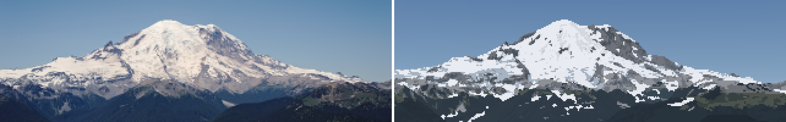
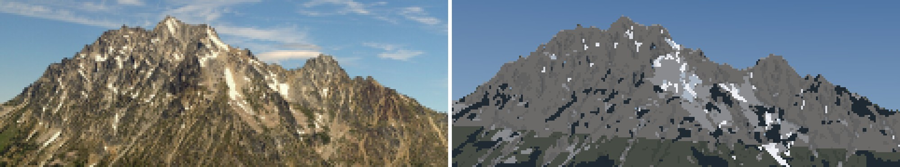
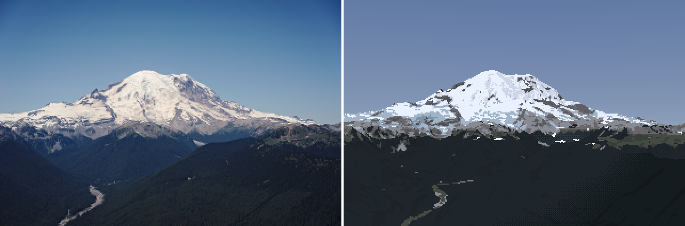
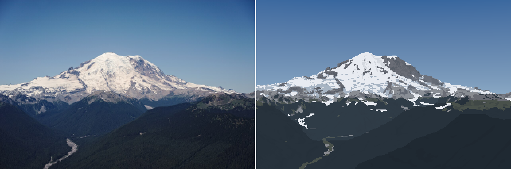
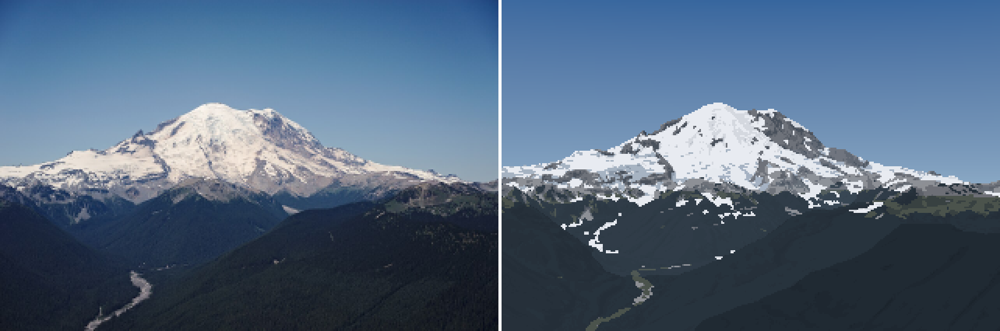

How-to 4: painting it
Snow-peak student. Code: src/paint.py, src/render.py. Story: POST.md §10, 13–14.
With the camera fitted and the snow placed, the painter's job is translation: turn a G-buffer into a few hundred pixels that read the way the photo reads. This page teaches the painter from its two runs of revisions, Rainier v1→v16 and Stuart g1→g6, with each step's code and the image that forced it.

Rainier from Silver Queen, v16 (crop, 5×). Silhouette exact; the Emmons–Winthrop firn, Little Tahoma, Steamboat Prow and the dark rock masses on the Willis side are in place. Still wrong: the warm mid-value band of rock and moraine under the ice is scattered grey, and there are false snow patches in the upper forest (this was rendered before the canopy fix in how-to 2).
The shape of the painter
Everything is drawn into an index canvas, four small integers per pixel:
- material: sky, snow, ice, debris, rock, scree, meadow, forest;
- family: lit or shade;
- step: a designed value inside the family, 2–3 per material and family;
- band: which haze band.
The palette is computed from light at the end: one colour per (material, family, step, band) that actually occurs, 30–60 colours per image. The same canvas re-lights for any hour or haze by recomputing the palette. That's the studio's scaffold ("paint indices, not colours"); what's new here is where each index comes from.
S = scene.Scene(shot, W=320 * 3) # 3x supersampled G-buffer
S.snow(season, season_over=dict(z_sl=z)); Gs = S.gbuffer(); S.resample()
render.add_fall_line(Gs, S.C)
G = render.native_from_super(Gs, 3, 320, H, S.C.hfov) # pooled to native pixels
render.add_haze_path(G, S.C.z, 2000.0)
C = paint.index(G, Gs, 3) # material, family, step, band (+ marks)
rgb, pal = paint.colour(C, G, paint.light_state(sun_el, sun_az), rock_albedo="dacite")
The supersampled buffer matters twice: decisions are made from fractions of supersamples, not from averaged fields.
1. Snow: smooth along the fall line, then decide
The aerial student's far snow was salt-and-pepper because they thresholded noise. Mine, at v1, was a string of dashes across the slope:

Blurring before the threshold (the aerial student's fix) makes round blobs. But snow patches aren't round: they're tongues down the slope, because gullies run down the slope (Imhof's Figure 170). So smooth the cover along the fall line only, a short line-integral convolution in screen space, then threshold:
def add_fall_line(Gs, C):
"""screen-space direction of steepest descent at each supersample"""
n = Gs["normal"]
d = np.stack([n[...,2]*n[...,0], n[...,2]*n[...,1], n[...,2]**2 - 1], -1) # downhill in 3-D
d /= np.linalg.norm(d, axis=-1, keepdims=True) + 1e-9
s = np.maximum(Gs["dist"] * np.radians(C.hfov) / C.W * 2, 5.0) # ~2 px of ground
x0, y0 = C.project(Gs["e"], Gs["n"], Gs["z"])
x1, y1 = C.project(Gs["e"] + d[...,0]*s, Gs["n"] + d[...,1]*s, Gs["z"] + d[...,2]*s)
v = np.stack([x1 - x0, y1 - y0], -1); Gs["fall"] = v / (np.linalg.norm(v, axis=-1, keepdims=True) + 1e-9)
def fall_smooth(a, fall, L, valid, n=None):
"""average a along the screen-space fall line over +-L px"""
for sgn in (1, -1):
x, y = xx.copy(), yy.copy()
for i in range(n):
fx, fy = fall[iy, ix, 0], fall[iy, ix, 1]
x += sgn * fx * L / n; y += sgn * fy * L / n
w = valid[iy, ix] * (1 - i / n) # tapering weights, stop at the sky
acc += a[iy, ix] * w; wsum += w
return acc / wsum
cov_s = Gs["cover"] * (1 - canopy_hide * Gs["trees"]) # snow under forest isn't seen
cov_s = np.maximum(cov_s, Gs["glacier"] > 0)
cov_s = fall_smooth(cov_s, Gs["fall"], 1.5 * k, ~sky_s) # 1.5 native px each way
snow_s = cov_s > 0.5
f_snow = down(snow_s, k) # fraction of supersamples
mat[terr & (f_snow / (1 - f_sky) >= 0.5)] = M["snow"]

v13, the first with fall-line smoothing. The snow edge breaks into tongues down the slope instead of dashes across it.
Then clean up the shapes, with one exception that comes straight from Ruskin:
- a majority clean removes single pixels that disagree with both horizontal and both vertical neighbours;
- small islands (snow patches or rock islands under 3 px) are absorbed into their surroundings, unless the curvature says they're a real form: snow in a hollow (a gully) or rock on a crest (a rib: "black points like arrow-heads through the snow");
- dashes: a component thinner than 1.5 px on average (area ÷ columns) is removed unless it's long enough to be a ledge band (18 px).
cmean = ndi.mean(curv, lab, ids)
keep_form = (cmean < -1.0) if is_snow else (cmean > 1.0) # gully fill / projecting rib
thick = area / np.maximum(cols, 1)
sliver = (thick < 1.5) & (area < 1.5 * ledge_min_len)
small = ((area < min_island) | sliver) & ~(keep_form & (area >= 2) & ~sliver)
I found the dash rule by dumping the index canvas around one dash (dbg_px.py): one row of snow, 10 pixels long, on forest. My first sliver rule counted rows spanned, which a diagonal dash defeats.
The other materials come from the G-buffer and WorldCover: forest where trees > 0.5, meadow below 2,000 m where it's neither bare nor forest, scree where it's bare and under 38°, ice where the glacier is bare, and debris-covered ice below 1,850 m.
2. Lit or shade: from the sub-pixel shadow fraction
The obvious way is to pool the normals to native resolution, then compute n·l and threshold. On a granite wall at 5 km that erases every rib and gully narrower than a pixel: the pooled normal is the face's mean, and the face is lit. Decide per supersample instead, and keep the fraction:
sh = ((Gs["ndl"] < 0.06) | (Gs["sunlit"] < 0.5)) & ~Gs["sky"] # each supersample: away or cast shadow
G["shadefrac"] = down(sh, k) / np.maximum(down(~Gs["sky"], k), 1e-3)
lit = G["shadefrac"] < 0.5 # the family
The fraction is used again inside the family: a lit pixel with 40% shade in it gets pulled down a step, so sub-pixel gullies read as texture.

Stuart g3, the first with the sub-pixel shade fraction: the dark gully strokes appear on the lit face.
3. The step: absolute light, blended with rank
Then Stuart's face still read as one flat plane, and so, I realised, did Rainier at noon. dbg_fields.py showed why:

Top to bottom: local relief, sub-pixel shade fraction, n·l, and the step. The structure is all there in n·l and relief, but at high noon n·l's range is so small that an absolute ramp puts almost the whole wall on one step (bottom).
An absolute ramp (step = f(n·l)) is physically honest and pictorially dead under a high sun. The fix is the ground student's quantile keying and the rock student's "value economy taken from the photo": rank the lit pixels of each material and give the steps fixed shares. Rock lit is 30/40/30%; lit snow is 8/22/70%, because snow is a plateau with a few darker forms.
def rank_steps(score, m, shares):
"""map score over mask m to a continuous step coordinate whose integer parts have the given shares"""
v = score[m]
r = (np.argsort(np.argsort(v)) + 0.5) / len(v) # rank in 0..1
edges = np.concatenate([[0.0], np.cumsum(np.asarray(shares, float))]); edges /= edges[-1]
k = np.clip(np.searchsorted(edges, r, side="right") - 1, 0, len(shares) - 1)
x = np.zeros_like(score); x[m] = k + (r - edges[k]) / np.maximum(edges[k + 1] - edges[k], 1e-9)
return x
The score being ranked is light plus local relief (n·l minus its own neighbourhood mean, computed at supersample scale: Imhof's "local adjustment of the light") minus the sub-pixel shade fraction. The final coordinate blends the absolute and the ranked, per material:
xl = np.clip((ndl - lit_lo) / lit_span, 0, 1) * (nl - 1 + 0.49) # absolute, lit
xs = np.clip((up - 0.35) / 0.55, 0, 1) * (ns - 1 + 0.49) # absolute, shade: sky view
scl = ndl + rk * rel / sd * 0.15 - subpix_k * 0.15 * sf # ranked score, lit
scs = up + rk * rel / sd * 0.15 + 0.3 * (1 - sf) # ranked score, shade
x = np.where(lit, (1 - q) * xl + q * rank_steps(scl, m & lit, shares["lit"]),
(1 - q) * xs + q * rank_steps(scs, m & ~lit, shares["shade"]))
# q: rock 0.85, scree 0.7, forest 0.7, snow 0.3, ice 0.4
Snow gets only 0.3 of the ranked share, so it stays mostly physical: Imhof says shading on snow must keep the same strength as on rock, and a keyed snow field loses the difference between a lit dome and a shaded bowl. Rock gets 0.85, because the wall's structure matters more than its mean light.
After that come two small adjustments. A seam of width 0.35 step between steps is dithered with clustered noise (2×2 cells with row offsets, so it reads as strings and clumps, not salt). And curvature adds a cavity step (a gully drops one step) and a rib step (a sun-facing rib gains one), with thresholds that scale with metres per pixel.

Stuart g6: the face shows its ribs and gullies at a designed value economy under a 3 pm July sun. It reads as rock structure at the right scale, but as a grey value texture, not the photo's gold rock with sharp dark lines.
4. Haze bands: three dead ends, then fine bands of haze path
Haze is applied per band, one colour per band, so the question is where the band edges go. The bands are in haze path (deff, how-to 3), not distance. It took four tries:
| try | what | result |
|---|---|---|
| v7 | band edges dithered over 6% of distance (as the aerial student did) | a smoky checker field across the valley floor |
| v8 | per column, one band per occlusion layer | vertical streaks wherever neighbouring columns crossed a ridge differently |
| v9 | 4 coarse bands, 5×5 majority filter | clean flat shapes, but big blobs with big value jumps |
| v11 | 11 fine bands (0.6–45 km of haze path), 3×3 majority | each seam is a small value step: a gentle contour, like the photo's gradient |

v7: dithered band seams read as smoke. The aerial student warned about exactly this. Dithering is for gradients within one shape; between shapes, a seam wants a clean edge.

v11: eleven fine bands. The valley recedes in flat steps, and the near ridge separates dark against it.
BAND_EDGES = (0.6, 1.2, 2.2, 3.6, 5.5, 8.0, 11.5, 16.5, 23.0, 32.0, 45.0) # haze-path km
def bands(G, P):
d = np.where(G["sky"], 1e12, G["deff"]) / 1000
raw = np.digitize(d, P["bands_km"]).astype(np.int16)
terr = ~G["sky"]
out = mode_filter(np.where(terr, raw, 0), 3, 2, mask=terr) # 3x3 majority, twice
return np.where(terr, out, raw)
Then comes band collapse (the aerial student's discovery that aerial perspective removes steps, not only contrast). Beyond 14 km of haze path each family keeps 2 steps; beyond 35 km, one lit and one shade.
5. The palette is the light
Each palette entry is computed from albedo and light at a representative n·l for its step, not per pixel:
LIT_RANGE = {"snow": (0.40, 0.95), "ice": (0.35, 0.95)} # snow's lit ramp is compressed (a plateau)
def step_light(name, fam, s):
ns, nl = NSTEP[name]
if fam == 1:
lo, hi = LIT_RANGE.get(name, (0.05, 1.15)) # rock's is wide, even exaggerated
return lo + (hi - lo) * (s + 0.5) / nl, 0.45 # (n.l, sky view)
return 0.0, 0.35 + 0.6 * (s + 0.5) / ns
def base_colour(name, fam, s, L, rock_albedo="rock"):
alb = ALBEDO[rock_albedo if name == "rock" else name]
ndl, sky = step_light(name, fam, s)
direct = L["sun"] * ndl if fam == 1 else 0.0
bounce = 0.20 * L["sun"] * (name in ("snow", "ice")) * (fam == 0) # snow lights its own shadows
return alb * (direct + L["skyamb"] * sky + bounce) * L["exposure"]
c = base_colour(...); tau = np.exp(-band_km[b] / L["haze_km"])
c = c * tau + L["air"] * (1 - tau) # Koschmieder, per band
The albedos are measurements (how-to 3): snow 0.82 (neutral; my first blue-tinted snow was the cause of a cold cast), granite 0.15, dacite 0.27, andesite 0.17, forest 0.0045 (blue-shifted). light_state(sun_el, sun_az, haze_km, warm, ...) warms and weakens the sun near the horizon, and sets the sky's zenith and horizon from the measured sky values (L* 46 zenith, 66 horizon). The sky is a gradient by the ray's elevation angle.
6. Marks: crevasses and cornices
Last, two marks drawn onto the canvas:
- Crevasses, where glacier ice steepens (11–38°): open cracks 6 m wide at a 45 m spacing (measured transverse spacings on temperate glaciers are 30–96 m), running across the flow, warped into arcs. They're drawn only where a crack fills a third of a pixel, so they fade into texture with distance by themselves. Each crack gets a lit lip on the pixel above.
- Cornices, from the snow model's lee-crest cells: the top snow step, with the curl's shadow on the pixel below.
ph = (e * fx + nn * fy + 18 * np.sin(e / 230) * np.cos(nn / 310)) / crev_space # position along the flow
crack = on_steep_ice & ((ph - np.floor(ph)) < crev_open / crev_space)
c = onice & (down(crack, k) > 0.34); step[c] = 0; fam[c] = 0
lip = np.roll(c, -1, 0) & onice & ~c & (fam == 1); step[lip] = nl - 1
These are the least tested part: I never had a fitted photo in which crevasses resolve.
The two runs, at a glance
Rainier from Silver Queen, in order (each is photo | painting):
 |
v3: albedos still guesses. Forest L* 25 against the photo's 14.5 |
 |
v6: albedos measured, haze path in. The forest drops to the photo's value |
 |
v9: majority-filtered haze shapes |
 |
v15: OGGM holding depth, compressed snow ramp. The steep walls are dark |
 |
v16: rank-keyed steps |
Glacier Peak, at the end, is the best pair:

What isn't there
- The terrain below the snow has no plane structure. Glacier Peak's forest is one blue-black slab where the photo has four receding green planes and a lit ridge. Stuart's 20 km forest is camouflage. The fix the critics named is the aerial student's and Ferrari's: one value per ridge layer, lighter and bluer with distance, warm on sunlit slopes. I never built it. The per-pixel bands follow haze path, not layers, and the ridge-layer attempt (v8) failed on the streaks.
- The rock has no strokes. Imhof's and Ruskin's rock is structure: ribs, joints and gully walls in a few clean lines. Mine is a value texture from ranked light. Next would be drawing rib and gully lines from the curvature ridges as clean runs, dark on the shade side with a lit lip on the sun side.
- Lit snow is cold. The photos' lit snow is warm white (b* +2 to +11). Mine is neutral to slightly blue, because the sky ambient term tints it.
- The sky is duller than the photos' at Glacier Peak (saturated blue there, grey-blue in mine).